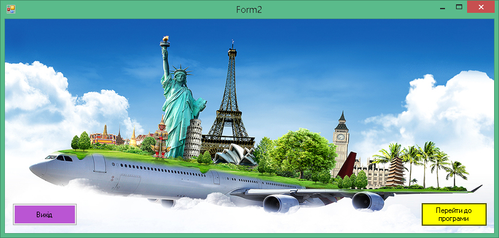
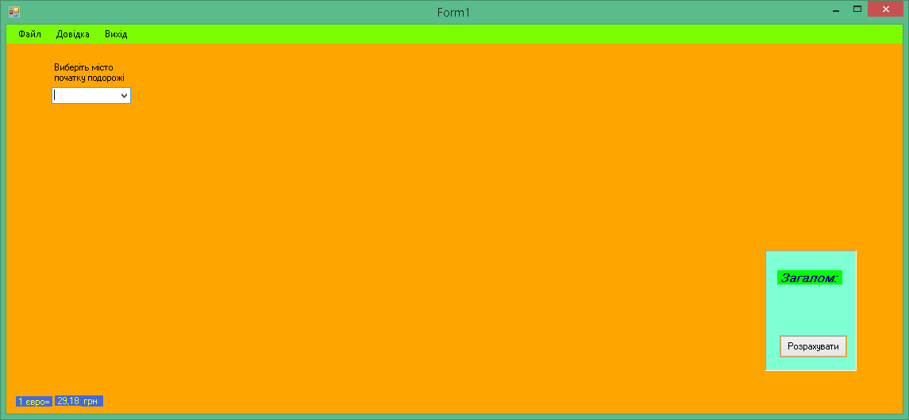
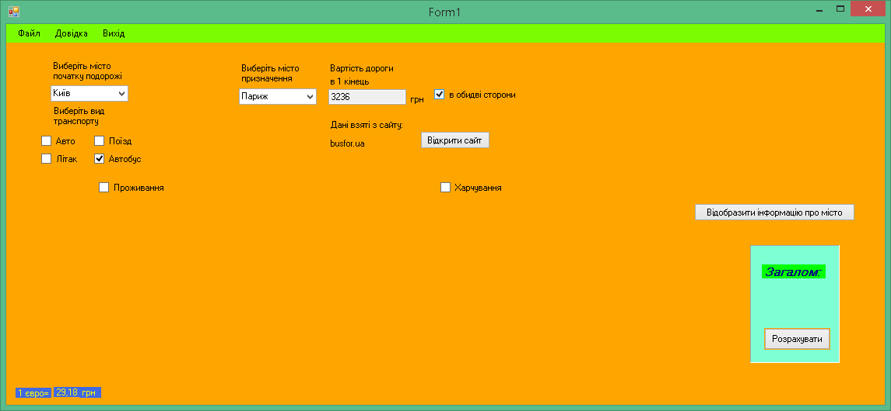
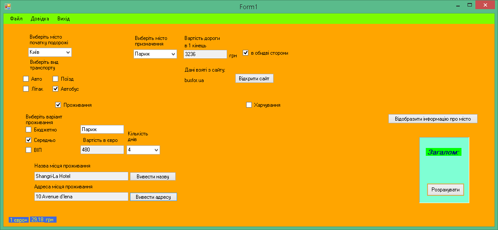
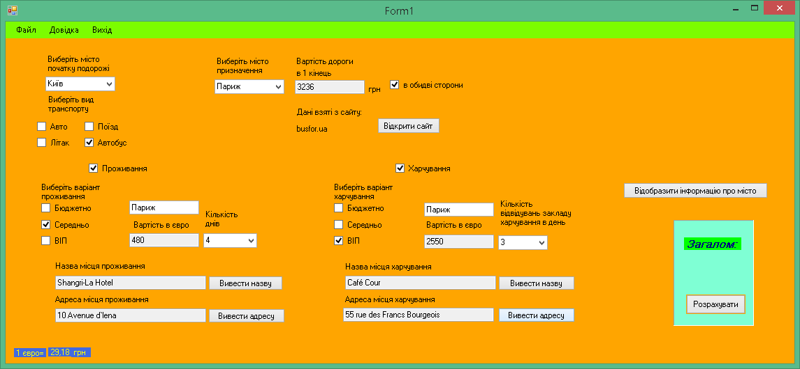
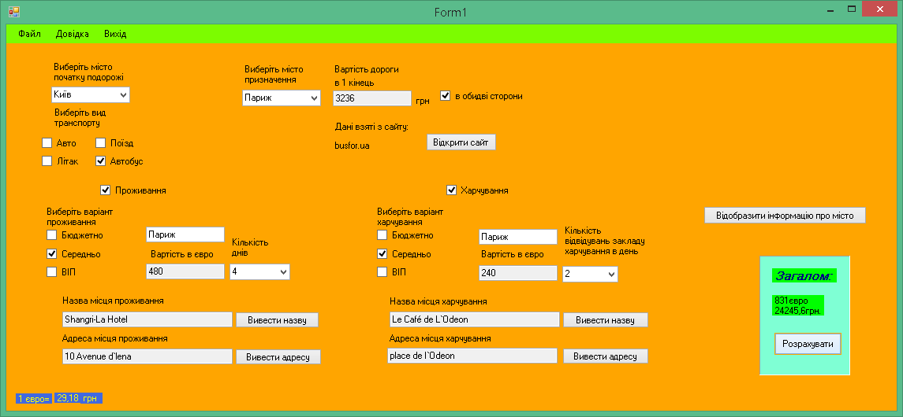
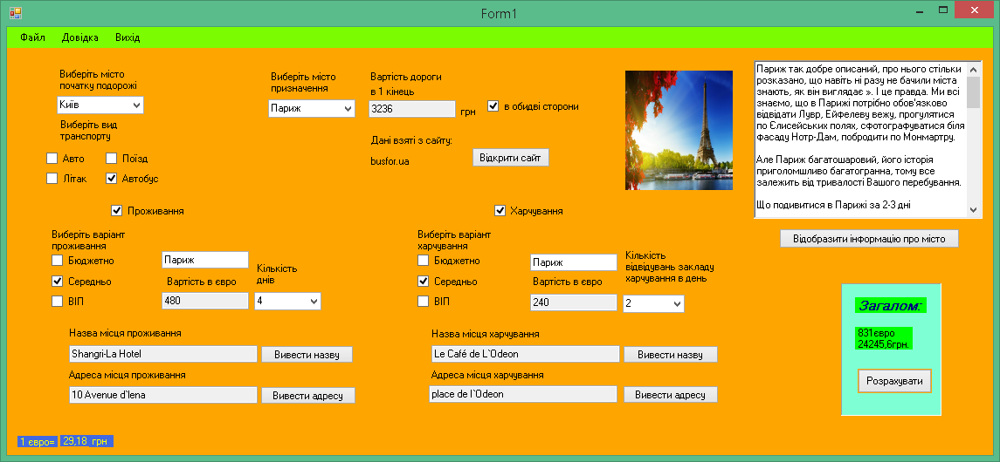
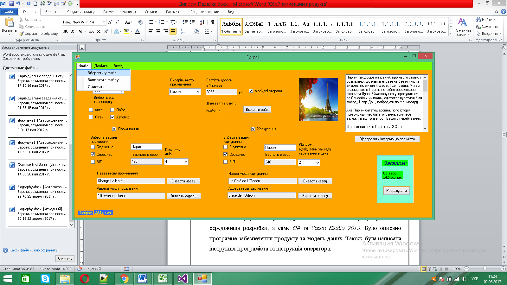

Після запуску відкриється основне вікно програми.

Щоб перейти до програми, натисніть кнопку «Перейти до програми».

Для початку розрахунку потрібно вибрати місто початку подорожі, транспорт та місто призначенн

Для розрахунку вартості проживання, виберіть пункт «Проживання», виберіть варіант проживання та кількість днів.
За бажанням можна вивести назву місця проживання та адресу.

Для розрахунку вартості харчування, виберіть пункт «Харчування», виберіть варіант харчування та кількість прийомів їжі на день.
За бажанням можна вивести назву місця харчування та адресу.

Для розрахунку повної вартості подорожі, натисніть кнопку «Розрахувати»

Для перегляду інформації про місто, натисніть кнопку «Відобразити інформацію про місто»

Для збереження інформації у файл, перейдіть у меню Файл – Зберегти у файл

Для запису інформації з файлу, перейдіть у меню Файл – Записати з файлу